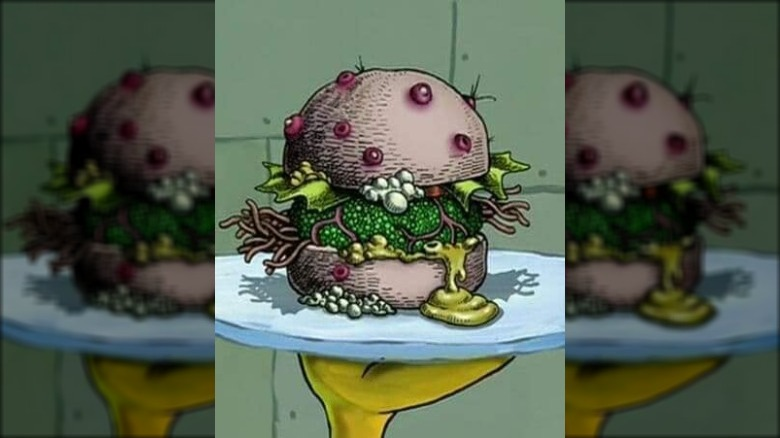

SpongeBob's Nasty Patty

There's nasty and then there's NASTY!
Inspired by the Krusty Krab's Top Chef, SpongeBob, this morsel of monstrosity is sure to
have the critics raving. Maybe not in a good way, so stay clear of the projectile zone.
Handcrafted with Bikini Bottom's finest ingredients, and whatever was left at the bottom of
the Chum Bucket. This revolting creation is oozing with revenge.
Think they can handle it?
Ingredients:
- 1 pc - Hamburger bun
- 8 oz - Meatless burger patty
- 1 pc - Cheese slice
- 1 pc - Lettuce
- 1 pc - Tomato slice
- 1/4 - Onion (red or yellow)
- 2 pc - Pickle slices
- 1 Tbsp - Ketchup
- 1 Tbsp - Mustard
- 1 tsp - Salt (sea)
- 1 tsp - Salt (land)
- 1.5 tsp - Barnacle shavings
- 2 oz - Volcano sauce (or any really hot sauce)
- 3 oz - Seahorse radish or horseradish (expired)
- 10 pc - Toenail clippings
- 1 - Toilet (public preferred)
- 1 pair - 10 day old gym socks
Recipe Instructions:
- Grill meatless burger patty until thoroughly cooked.
- Construct a "Krabby Patty" as follows:
- Bun
- Patty
- Ketchup
- Mustard
- Pickles
- Onions
- Lettuce
- Cheese
- Tomato
- Bun
In that order!
- Flip the whole burger over so the top bun is facing down.
- Remove bottom bun and set aside.
- Plop 1 oz of volcano sauce on the patty.
- Add 3 oz of seahorse radish (or expired horseradish).
- Top with 10 toenail clippings, land & sea salts, and 1.5 tsp of barnacle shavings.
- Replace bottom bun and flip the burger back over.
- Go to a nearby toilet and drop the burger into the bowl.
(DO NOT let it sit for too long or the buns will get soggy and not hold their form)
- Remove burger from the toilet and dry it off with the smelly old gym socks.
- Plate the burger and serve to your local health food inspector. OR try it for yourself.
Good luck!